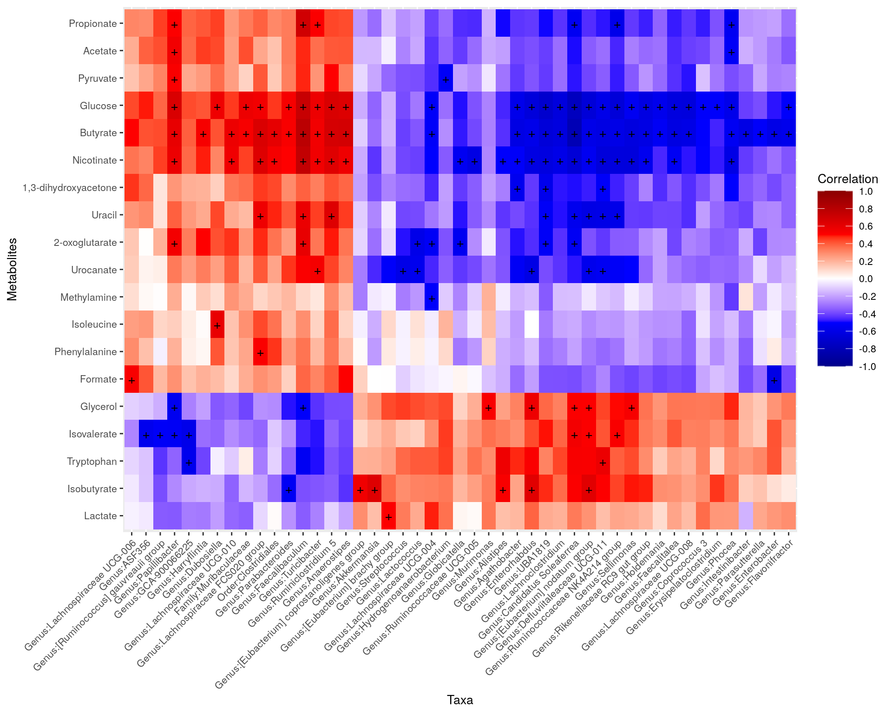

Chapter 12 Multi-assay analyses
## Loading required package: ecodistlibrary(mia)Multi-omics means that we integrate data from multiple sources. For example, we can integrate microbial abundances in the gut with biomolecular profiling data from blood samples. This kind of integrative multi-omic approaches can support the analysis of microbiome dysbiosis and facilitate the discovery of novel biomarkers for health and disease.
With cross-correlation analysis, we can analyze how strongly and how differently variables are associated between each other. For instance, we can analyze if higher presence of a specific taxon equals to higher levels of a biomolecule.
The data containers that the miaverse utilizes are scalable and they can contain different types of data in a same container. Because of that, the miaverse is well-suitable for multi-assay microbiome data which incorporates different types of complementary data sources in a single reproducible workflow.
Another experiment can be stored in altExp slot of SE data container or both experiments can be stored side-by-side in MAE data container.
Different experiments are first imported into SE or TreeSE data container similarly to the case when only one experiment is present. After that different experiments are combined into the same data container. Result is one TreeSE object with alternative experiment in altExp slot, or MAE object with multiple experiment in its experiment slot.
As an example data, we use data from following publication: Hintikka L et al. (2021) Xylo-oligosaccharides in prevention of hepatic steatosis and adipose tissue inflammation: associating taxonomic and metabolomic patterns in fecal microbiotas with biclustering.
In this article, mice were fed with high-fat and low-fat diets with or without prebiotics. The purpose of this was to study if prebiotics would reduce the negative impacts of high-fat diet.
This example data can be loaded from microbiomeDataSets. The data is already in MAE format. It includes three different experiments: microbial abundance data, metabolite concentrations, and data about different biomarkers. Help for importing data into SE object you can find from here.
# Load the data
mae <- microbiomeDataSets::HintikkaXOData()
mae## A MultiAssayExperiment object of 3 listed
## experiments with user-defined names and respective classes.
## Containing an ExperimentList class object of length 3:
## [1] microbiota: SummarizedExperiment with 12706 rows and 40 columns
## [2] metabolites: SummarizedExperiment with 38 rows and 40 columns
## [3] biomarkers: SummarizedExperiment with 39 rows and 40 columns
## Functionality:
## experiments() - obtain the ExperimentList instance
## colData() - the primary/phenotype DataFrame
## sampleMap() - the sample coordination DataFrame
## `$`, `[`, `[[` - extract colData columns, subset, or experiment
## *Format() - convert into a long or wide DataFrame
## assays() - convert ExperimentList to a SimpleList of matrices
## exportClass() - save data to flat filesif(!require(stringr)){
install.packages("stringr")
library(stringr)
}
# Drop off those bacteria that do not include information in Phylum or lower levels
mae[[1]] <- mae[[1]][!is.na(rowData(mae[[1]])$Phylum), ]
# Clean taxonomy data, so that names do not include additional characters
rowData(mae[[1]]) <- DataFrame(apply(rowData(mae[[1]]), 2,
str_remove, pattern = "._[0-9]__"))
# Microbiome data
mae[[1]]## class: SummarizedExperiment
## dim: 12613 40
## metadata(0):
## assays(1): counts
## rownames(12613): GAYR01026362.62.2014 CVJT01000011.50.2173 ...
## JRJTB:03787:02429 JRJTB:03787:02478
## rowData names(7): Phylum Class ... Species OTU
## colnames(40): C1 C2 ... C39 C40
## colData names(0):# Metabolite data
mae[[2]]## class: SummarizedExperiment
## dim: 38 40
## metadata(0):
## assays(1): nmr
## rownames(38): Butyrate Acetate ... Malonate 1,3-dihydroxyacetone
## rowData names(0):
## colnames(40): C1 C2 ... C39 C40
## colData names(0):# Biomarker data
mae[[3]]## class: SummarizedExperiment
## dim: 39 40
## metadata(0):
## assays(1): signals
## rownames(39): Triglycerides_liver CLSs_epi ... NPY_serum Glycogen_liver
## rowData names(0):
## colnames(40): C1 C2 ... C39 C40
## colData names(0):Next we can do the cross-correlation analysis. Here we analyse if individual bacteria genera correlates with concentrations of individual metabolites. This helps as to answer the question: “If this bacteria is present, is this metabolite’s concentration then low or high?”
# Agglomerate microbiome data at Genus level
mae[[1]] <- agglomerateByRank(mae[[1]], rank = "Genus")
# Does log10 transform for microbiome data
mae[[1]] <- transformSamples(mae[[1]], method = "log10", pseudocount = 1)
# Cross correlates data sets
correlation_table <- testExperimentCrossCorrelation(mae,
experiment1 = 1,
experiment2 = 2,
abund_values1 = "log10",
abund_values2 = "nmr",
method = "spearman",
p_adj_threshold = 0.05,
cor_threshold = 0)
knitr::kable(head(correlation_table))| Var1 | Var2 | cor | pval | p_adj |
|---|---|---|---|---|
| Genus:Streptococcus | Butyrate | -0.4136 | 0.0080 | 0.1729 |
| Genus:Ruminiclostridium 5 | Butyrate | 0.6760 | 0.0000 | 0.0017 |
| Genus:Lactococcus | Butyrate | -0.3657 | 0.0209 | 0.2871 |
| Genus:Globicatella | Butyrate | -0.4792 | 0.0018 | 0.0790 |
| Genus:Enterobacter | Butyrate | -0.6011 | 0.0000 | 0.0079 |
| Genus:Lachnoclostridium | Butyrate | -0.6346 | 0.0000 | 0.0039 |
Reorders the table
if(!require(reshape2)){
install.packages("reshape2")
}
# Converts data to matrix, correlations as values
mat <- reshape2::acast(correlation_table, Var2 ~ Var1, value.var = "cor")
# Hierarchical clustering, gets the order of taxa and lipids
taxa_indices <- hclust(as.dist(1 - cor(mat, use="pairwise.complete.obs")))$order
order_taxa <- colnames(mat)[taxa_indices]
lipids_indices <- hclust(as.dist(1 - cor(t(mat), use="pairwise.complete.obs")))$order
order_lipids <- rownames(mat)[lipids_indices]
# Converts taxa and lipids columns to factor so that they have the desired order
correlation_table[["Var1"]] <- factor(correlation_table[["Var1"]], levels = order_taxa)
correlation_table[["Var2"]] <- factor(correlation_table[["Var2"]], levels = order_lipids)Creates the heatmap
library(ggplot2)
# Determines the scaling of colors
limits <- c(-1, 1)
breaks <- seq(from = min(limits), to = max(limits), by = 0.2)
colours <- c("darkblue", "blue", "white", "red", "darkred")
# Which observation have p-value under 0.05? --> creates a subset
cor_table_sub <- correlation_table[which(correlation_table[["p_adj"]] < 0.05), ]
# Creates a ggplot object
ggplot(correlation_table, aes(x = Var1, y = Var2, fill = cor)) +
geom_tile() +
scale_fill_gradientn(name = "Correlation",
breaks = breaks, limits = limits, colours = colours) +
# Adds label to those observations that have p-value under 0.05
geom_text(data = cor_table_sub, aes(x = Var1, y = Var2, label = "+")) +
theme(text = element_text(size=10),
axis.text.x = element_text(angle=45, hjust=1),
legend.key.size = unit(1, "cm")) +
labs(x = "Taxa", y = "Metabolites")
Session Info
R version 4.1.2 (2021-11-01)
Platform: x86_64-pc-linux-gnu (64-bit)
Running under: Ubuntu 20.04.3 LTS
Matrix products: default
BLAS/LAPACK: /usr/lib/x86_64-linux-gnu/openblas-pthread/libopenblasp-r0.3.8.so
locale:
[1] LC_CTYPE=en_US.UTF-8 LC_NUMERIC=C
[3] LC_TIME=en_US.UTF-8 LC_COLLATE=en_US.UTF-8
[5] LC_MONETARY=en_US.UTF-8 LC_MESSAGES=C
[7] LC_PAPER=en_US.UTF-8 LC_NAME=C
[9] LC_ADDRESS=C LC_TELEPHONE=C
[11] LC_MEASUREMENT=en_US.UTF-8 LC_IDENTIFICATION=C
attached base packages:
[1] stats4 stats graphics grDevices utils datasets methods
[8] base
other attached packages:
[1] ggplot2_3.3.5 reshape2_1.4.4
[3] stringr_1.4.0 microbiomeDataSets_1.1.5
[5] mia_1.3.13 MultiAssayExperiment_1.20.0
[7] TreeSummarizedExperiment_2.1.4 Biostrings_2.62.0
[9] XVector_0.34.0 SingleCellExperiment_1.16.0
[11] SummarizedExperiment_1.24.0 Biobase_2.54.0
[13] GenomicRanges_1.46.1 GenomeInfoDb_1.30.0
[15] IRanges_2.28.0 S4Vectors_0.32.3
[17] BiocGenerics_0.40.0 MatrixGenerics_1.6.0
[19] matrixStats_0.61.0-9001 ecodist_2.0.7
[21] BiocStyle_2.22.0 rebook_1.4.0
loaded via a namespace (and not attached):
[1] AnnotationHub_3.2.0 BiocFileCache_2.2.0
[3] plyr_1.8.6 lazyeval_0.2.2
[5] splines_4.1.2 BiocParallel_1.28.3
[7] scater_1.22.0 digest_0.6.29
[9] yulab.utils_0.0.4 htmltools_0.5.2
[11] viridis_0.6.2 fansi_0.5.0
[13] magrittr_2.0.1 memoise_2.0.1
[15] ScaledMatrix_1.2.0 cluster_2.1.2
[17] DECIPHER_2.22.0 colorspace_2.0-2
[19] blob_1.2.2 rappdirs_0.3.3
[21] ggrepel_0.9.1 xfun_0.29
[23] dplyr_1.0.7 crayon_1.4.2
[25] RCurl_1.98-1.5 jsonlite_1.7.2
[27] graph_1.72.0 ape_5.6
[29] glue_1.6.0 gtable_0.3.0
[31] zlibbioc_1.40.0 DelayedArray_0.20.0
[33] BiocSingular_1.10.0 scales_1.1.1
[35] DBI_1.1.2 Rcpp_1.0.7
[37] viridisLite_0.4.0 xtable_1.8-4
[39] decontam_1.14.0 tidytree_0.3.6
[41] bit_4.0.4 rsvd_1.0.5
[43] httr_1.4.2 dir.expiry_1.2.0
[45] ellipsis_0.3.2 farver_2.1.0
[47] pkgconfig_2.0.3 XML_3.99-0.8
[49] scuttle_1.4.0 CodeDepends_0.6.5
[51] sass_0.4.0 dbplyr_2.1.1
[53] utf8_1.2.2 tidyselect_1.1.1
[55] rlang_0.4.12 later_1.3.0
[57] AnnotationDbi_1.56.2 munsell_0.5.0
[59] BiocVersion_3.14.0 tools_4.1.2
[61] cachem_1.0.6 DirichletMultinomial_1.36.0
[63] generics_0.1.1 RSQLite_2.2.9
[65] ExperimentHub_2.2.0 evaluate_0.14
[67] fastmap_1.1.0 yaml_2.2.1
[69] knitr_1.37 bit64_4.0.5
[71] purrr_0.3.4 KEGGREST_1.34.0
[73] nlme_3.1-153 sparseMatrixStats_1.6.0
[75] mime_0.12 compiler_4.1.2
[77] png_0.1-7 beeswarm_0.4.0
[79] filelock_1.0.2 curl_4.3.2
[81] interactiveDisplayBase_1.32.0 treeio_1.18.1
[83] tibble_3.1.6 bslib_0.3.1
[85] stringi_1.7.6 highr_0.9
[87] lattice_0.20-45 Matrix_1.4-0
[89] vegan_2.5-7 permute_0.9-5
[91] vctrs_0.3.8 pillar_1.6.4
[93] lifecycle_1.0.1 BiocManager_1.30.16
[95] jquerylib_0.1.4 BiocNeighbors_1.12.0
[97] bitops_1.0-7 irlba_2.3.5
[99] httpuv_1.6.5 R6_2.5.1
[101] bookdown_0.24 promises_1.2.0.1
[103] gridExtra_2.3 vipor_0.4.5
[105] codetools_0.2-18 MASS_7.3-54
[107] assertthat_0.2.1 withr_2.4.3
[109] GenomeInfoDbData_1.2.7 mgcv_1.8-38
[111] parallel_4.1.2 grid_4.1.2
[113] beachmat_2.10.0 tidyr_1.1.4
[115] rmarkdown_2.11 DelayedMatrixStats_1.16.0
[117] shiny_1.7.1 ggbeeswarm_0.6.0